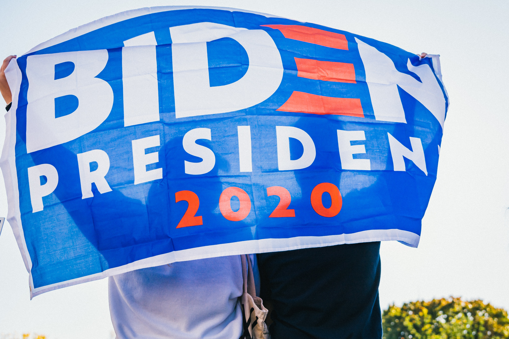

Local
Den första torsdagen i mars är en speciell dag för många människor runt om i världen. Det är nämligen den internationella kvinnodagen, en dag som uppmärksammar kampen för kvinnors rättigheter och jämställdhet.
Sedan den första internationella kvinnodagen hölls år 1911 har mycket hänt, men det finns fortfarande mycket kvar att göra. Kvinnor kämpar fortfarande för lika lön, rättvisa villkor på arbetsplatsen, och för att få sina röster hörs i beslutsfattande positioner.
På den första torsdagen i mars arrangeras det olika event och manifestationer runt om i världen för att uppmärksamma denna dag. Många organisationer använder dagen för att sätta fokus på olika frågor som rör kvinnors rättigheter, och för att fortsätta kampen för jämställdhet.
Så på den första torsdagen i mars är det viktigt att vi tar en stund för att tänka på kvinnors rättigheter och på vad vi själva kan göra för att bidra till en mer jämställd värld. Genom att öka medvetenheten och genom att fortsätta kampen för jämställdhet kan vi tillsammans göra en positiv förändring i världen.

Worldwide
Joe Biden is the 46th President of the United States, having been inaugurated on January 20, 2021. Prior to his presidency, he served as Vice President under Barack Obama from 2009 to 2017 and was a senator for the state of Delaware for 36 years.
Throughout his political career, Biden has been known for his advocacy for middle-class families and his work on foreign policy issues. He played a key role in the passage of several pieces of legislation, including the Violence Against Women Act and the Affordable Care Act.
During his presidential campaign, Biden emphasized the need for unity and healing in a deeply divided nation. He has made efforts to reach out to both Republicans and Democrats in an attempt to bridge the political divide and bring the country together.
Biden has also prioritized tackling the COVID-19 pandemic, implementing a national strategy to increase vaccine distribution and mask-wearing, as well as providing economic relief to individuals and small businesses impacted by the pandemic.
In addition to his domestic policies, Biden has emphasized the importance of strengthening America's alliances and standing on the global stage. He has worked to restore relationships with key allies and has taken a tough stance on Russia and China.
Overall, Joe Biden's presidency is still in its early stages, but he has already made significant strides in addressing key issues facing the country and bringing a sense of stability and unity to the American people.

Sports
Den amerikanska fotbollsspelaren Damar Hamlin i Buffalo Bills kollapsade på planen efter en tackling i matchen mot Cincinatti Bengals natten mot måndag. Under tisdagsmorgonen, svensk tid, meddelade Buffalo Bills att Hamlin drabbades av ett hjärtstopp.
Läkare utförde hjärt- och lungräddning på Hamlin på planen, omgivna av de andra spelarna, och han fördes sedan till sjukhus. Enligt ett uttalande från NFL är hans tillstånd kritiskt.
Matchen avbröts och NFL meddelade efter en dryg timme att den inte skulle återupptas.
”Våra tankar är med Damar och Buffalo Bills. Vi kommer att ge mer information så fort det finns”, sade ligan i ett uttalande.
Under tisdagsmorgonen kom ytterligare besked om det som inträffat.
”Damar Hamlin drabbades av ett hjärtstopp efter en smäll under matchen mot Bengals. Hans hjärtrytm återställdes på planen och han fördes till sjukhus för vidare testning och behandling. Hans tillstånd är kritiskt men stabilt.”, skriver Buffalo Bills på Twitter.
De otäcka bilderna har väckt känslor i USA.
– Det är fruktansvärt att se. Jag önskar bara det bästa till den här killen och staden Buffalo, laget och hela ligan. Man vill aldrig se något sådant hända, säger basketstjärnan LeBron James.